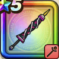

ゴシックパラソル
攻略班 6.0点 / ヒャドラリホーヒャダルコマヒャド
くわしい特徴
【レベル別習得スキル】 Lv1ヒャド（消費MP：7）氷のつぶてで敵1体にヒャド属性の呪文小ダメージを与える Lv10ラリホー（消費MP：10）敵1体を眠りにさそう Lv15ヒャダルコ（消費MP：15）氷の刃で敵全体にヒャド属性の呪文小ダメージを与える Lv20戦闘終了時にMPを10回復する Lv30マヒャド（消費MP：24）敵全体にヒャド属性呪文中ダメージを与える。 Lv35植物系へのダメージ+10% Lv40ヒャド属性じゅもんダメージ+10% Lv45さいだいMP+12 Lv50こうげき魔力+12 【限界突破スキル】 1凸じゅもんダメージ+5% 2凸じゅもんダメージ+5% 3凸じゅもんダメージ+5% 4凸じゅもんダメージ+5%